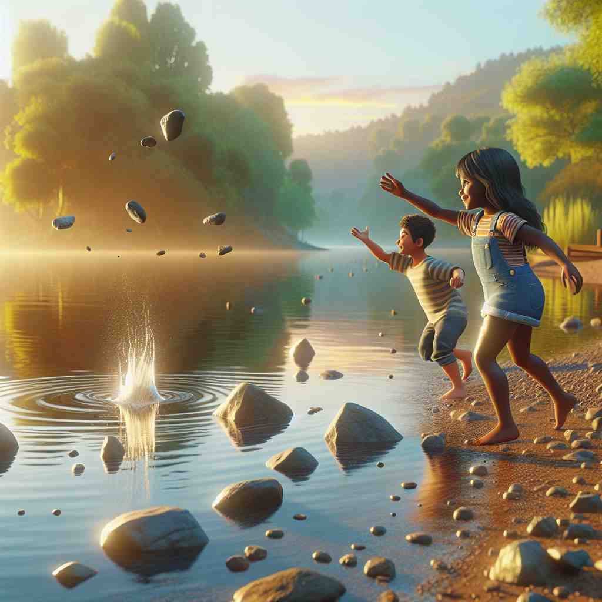
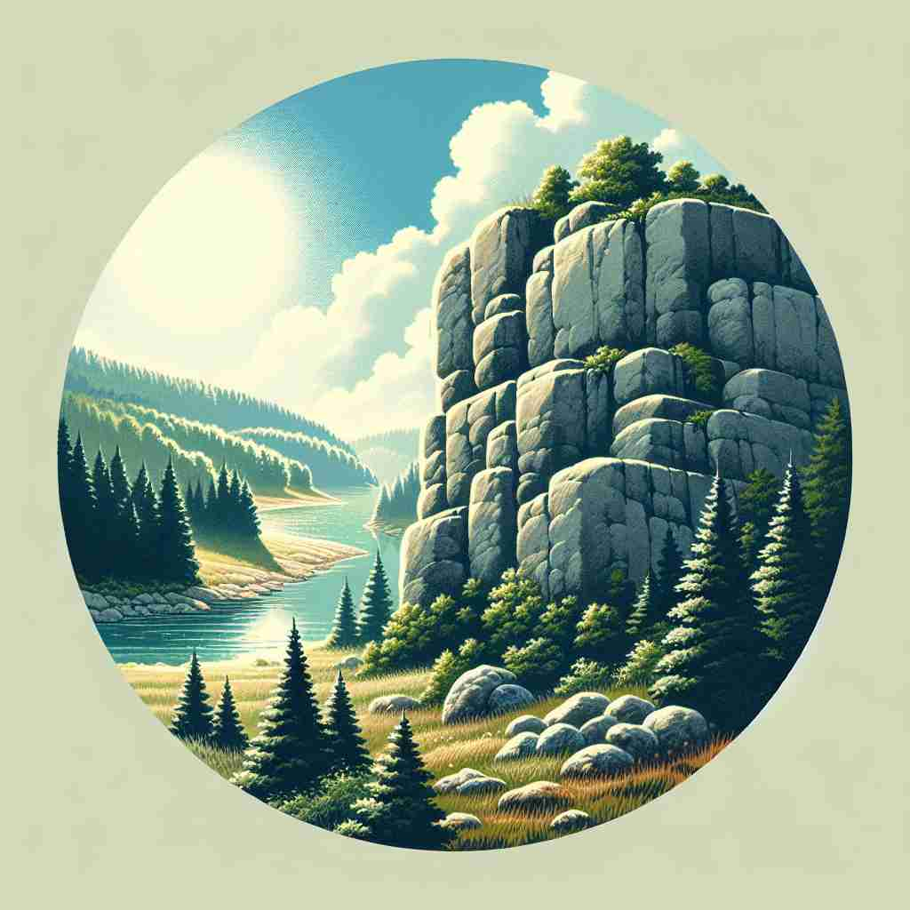

💬 The climber needs to climb a rock to reach the top of the mountain.

💬 The children like to throw a rock into the lake.
💬 The researcher will study a rock to learn more about its features.

💬 The hiker stopped to rest next to a big rock.
🔈 [rɒk]
🗝️ n. a hard, solid material that forms part of the Earth's surface
🖼️ 在一个阳光明媚的海滩上，孩子们正在捡拾海滩上的石头，用它们搭建小城堡。这些石头的坚硬质地和多样形状展示了'rock'作为地球表面坚硬物质的含义。
🔍 想象一块坚硬的岩石（rock）。它可以代表稳固和力量，也可以摇晃或被震动。这个核心概念贯穿了'rock'的各种用法，从物理上的岩石到抽象的摇摆动作，再到音乐风格和出色表现。通过联想岩石的特性，你可以更容易理解和记住'rock'的多重含义。
💬 The climber needs to climb a rock to reach the top of the mountain.
💬 The children like to throw a rock into the lake.
💬 The researcher will study a rock to learn more about its features.
💬 The hiker stopped to rest next to a big rock.
🌳 源自古英语 "rocc" 和拉丁语 "rocca"，表示 "岩石" 或 "石头"。没有明显的词根词缀构成。
💡 可以联想为 "rock" 是一种坚硬的物体，构成"rocky"（多岩石的地方），通过石头的物理特性来记忆这一单词。
🗝️ v. to move gently back and forth or from side to side
🖼️ 在一个宁静的秋日午后，一位母亲坐在门廊的摇椅上，轻轻地前后摇动着，怀里的婴儿逐渐进入梦乡。这温柔的节奏传达了'rock'作为轻轻摇晃的意思。
💬 The mother rocked the baby to sleep.
❓ 像岩石在地震中摇晃的动作
🗝️ n. a genre of popular music characterized by a strong beat and amplified instruments
🖼️ 夜晚的音乐会现场，乐队正在舞台上激情演出，电吉他的强烈节奏和鼓点让观众热血沸腾。此刻，'rock'传达了作为一种音乐风格的震撼力量。
💬 He loves listening to classic rock from the 70s.
❓ 这种音乐风格像岩石一样坚硬有力
🗝️ v. to be very good or impressive
🖼️ 在公司年会上，一位员工上台展示了她的项目成果。她充满信心地分享创新想法，博得了全场掌声和喝彩，证明了她的表现令人印象深刻，真正的'rock'了全场。
💬 That new restaurant rocks! The food is amazing.
❓ 像岩石一样稳固强大
🗝️ v. to shake or disturb strongly
🖼️ 在一场地震中，桌上的物品因为剧烈的摇晃而掉落，地面不时传来轰鸣声，房间被猛烈震荡。这种强烈的动摇体现了'rock'作为剧烈震动的含义。
💬 The scandal rocked the entire political establishment.
❓ 像地震撼动岩石一样
🗝️ n. a small, hard candy, often in the shape of a stick
🖼️ 在一个游乐园的纪念品店，孩子们兴奋地挑选色彩缤纷的糖果棒，每根糖果都硬邦邦的，一口下去甜美无比，正是'rock'糖特有的口感。
💬 He bought a stick of rock at the seaside shop.
❓ 质地坚硬如岩石